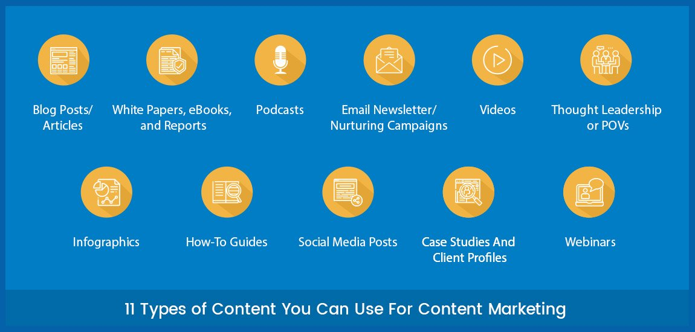
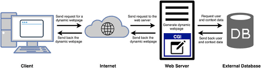

TABLE OF CONTENTS
[Click on the topic you want to learn]
CLIENT SERVER
The client server mode is a network architecture where one computer(client) makes a request for resources or sevices.
Components of Web application
A web application typically consists of three main components: the frontend, backend, and database. The frontend (or client-side) is the part users interact with, built using HTML, CSS, and JavaScript. The backend (or server-side) handles business logic, user authentication, and data processing, often using languages like Python, PHP, or Node.js.
The database stores and manages data, such as user accounts or product information, and is accessed by the backend when needed. Together, these components work to deliver dynamic, interactive experiences on the web.
Types of web content

- Text: Articles, blogs, news, and written information.
- Images: Photos, illustrations, and graphics.
- Videos: Tutorials, advertisements, and entertainment clips.
- Audio: Podcasts, music, and sound effects.
- Interactive Content: Forms, quizzes, polls, and games.
HTTP-HTTP Requests

An HTTP request is a message sent by a client, usually a web browser, to a server to ask for resources like web pages, images, or data. It follows the Hypertext Transfer Protocol (HTTP) and includes details such as the request method (GET, POST, etc.), the URL, headers with metadata, and sometimes a body with data. The server processes the request and responds with the requested resource or an error message, enabling communication between the client and the web server.
Get smarter responses, upload files and images, and more.
Dynamic web pages

Dynamic web pages are web pages that are generated in real-time based on user interactions or other factors, rather than being fixed like static pages. They use server-side scripting languages such as PHP, Python, or JavaScript (with Node.js) to fetch and display content from databases, personalize user experiences, or update information without reloading the whole page. This makes websites more interactive and responsive to users’ needs.
Application Servers

An application server is a software framework that provides an environment to run and manage web applications. It handles business logic, processes client requests, connects to databases, and delivers dynamic content. By acting as a middle layer between the web server and the database, the application server ensures efficient execution of applications and smooth communication within the web architecture.